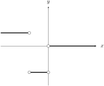

I can sketch the derivative graph of a function and determine where it is differentiable (and classify the non-differentiability type) using numerical, algebraic, or graphical representations.
Use the Calc tool at the top of the page to graph \(f(x)\) and \(f'(x)\text{.}\) Which relationship(s) do you observe to be true?
When the function is increasing, the derivative graph is positive
When the function is decreasing, the derivative graph is negative
When the function is not changing, the derivative graph is zero
There is no connection between the graph of \(f(x)\) and \(f'(x)\)
Activity2.3.2.
Use the graph given below to sketch the graph of the derivative.
Figure2.3.1.The graph of a function
Activity2.3.3.
Match each graph below with the graph of its derivative.
Figure2.3.2.Graph A
Figure2.3.3.Graph B
Figure2.3.4.Graph C
Figure2.3.5.Graph I
Figure2.3.6.Graph II
Figure2.3.7.Graph III
Activity2.3.4.
The image below shows the graphs of a position function (\(s(t)\)), a velocity function (\(v(t) = s'(t)\)), and an acceleration function (\(a(t) = v'(t) = s''(t)\)).
The limit does not exist and therefore \(g'(0)\) does not exist
(d)
Recall that the expression \(\dfrac{f(x+h)-f(x)}{h}\) computes the slope of a function \(f(x)\) between the points \((x,f(x))\) and \((x+h,f(x+h))\text{.}\) Based on this, complete the statement: “If the slopes of the tangent lines to a function at a point are not the same from the left and from the right, then...”
Definition2.3.9.
A function \(f(x)\) is said to be differentiable at the point \(x=a\) if the limit